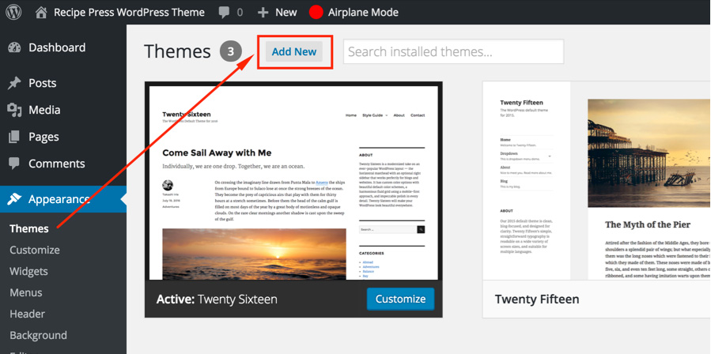
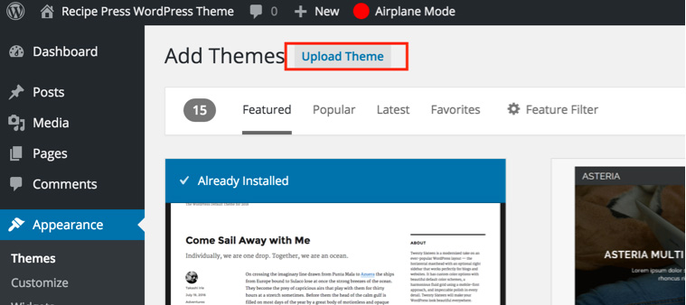
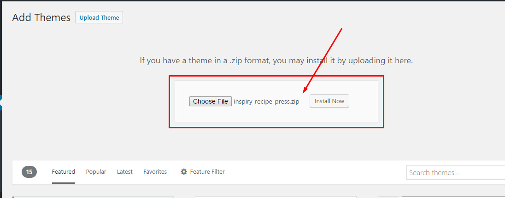
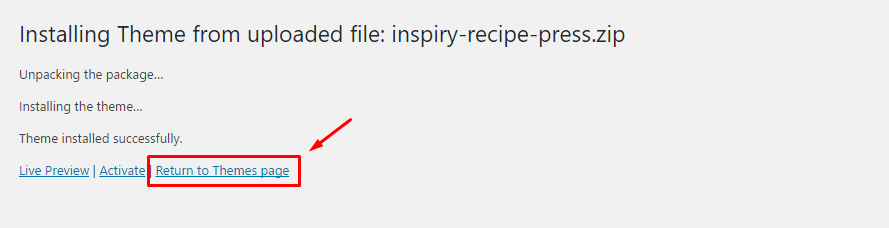
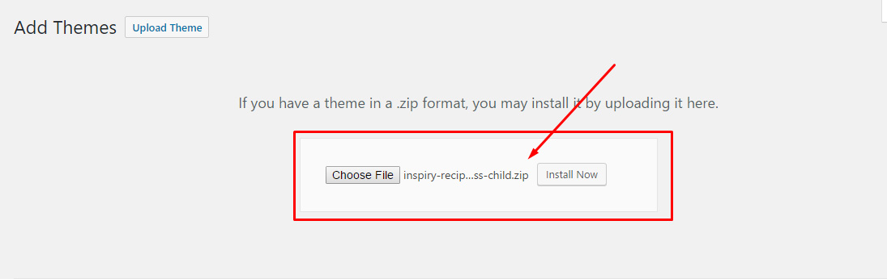
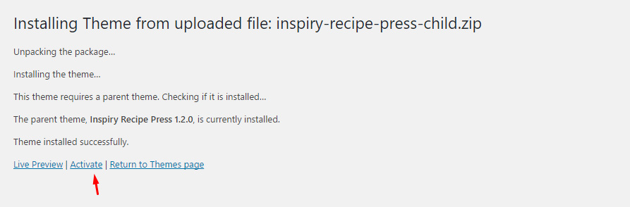
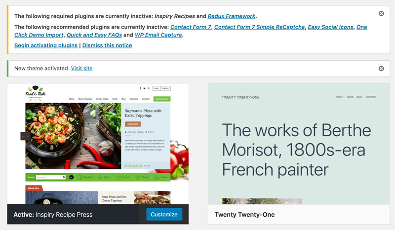
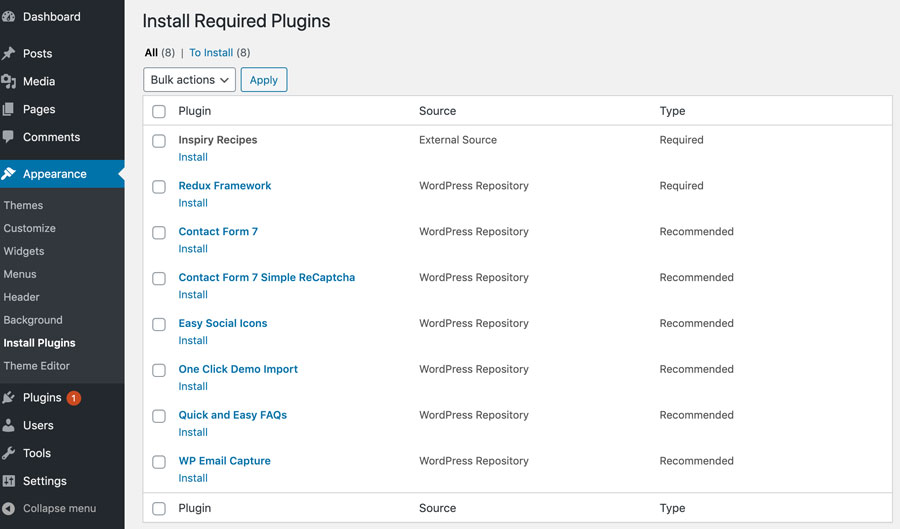
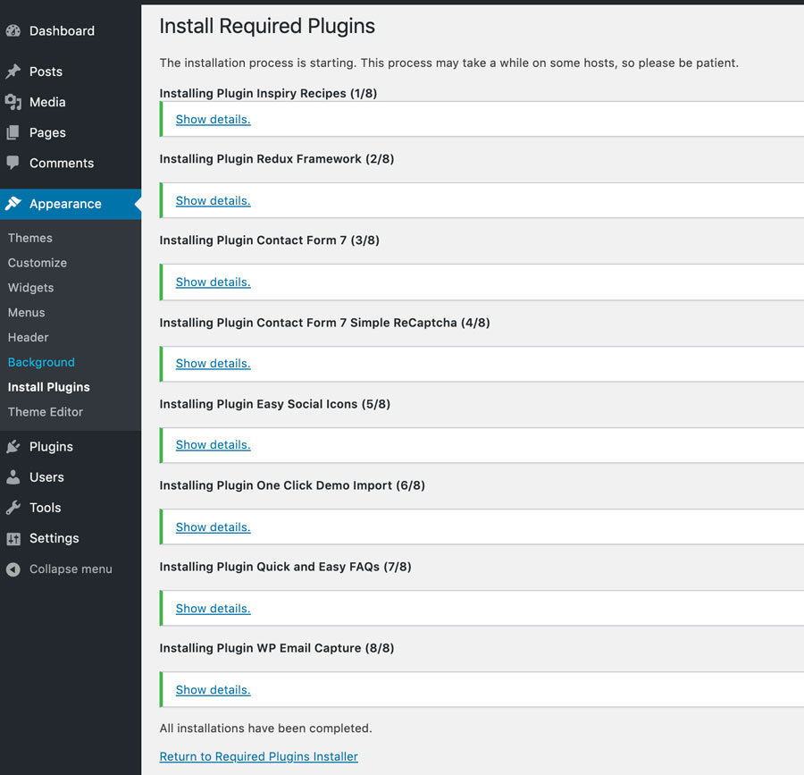
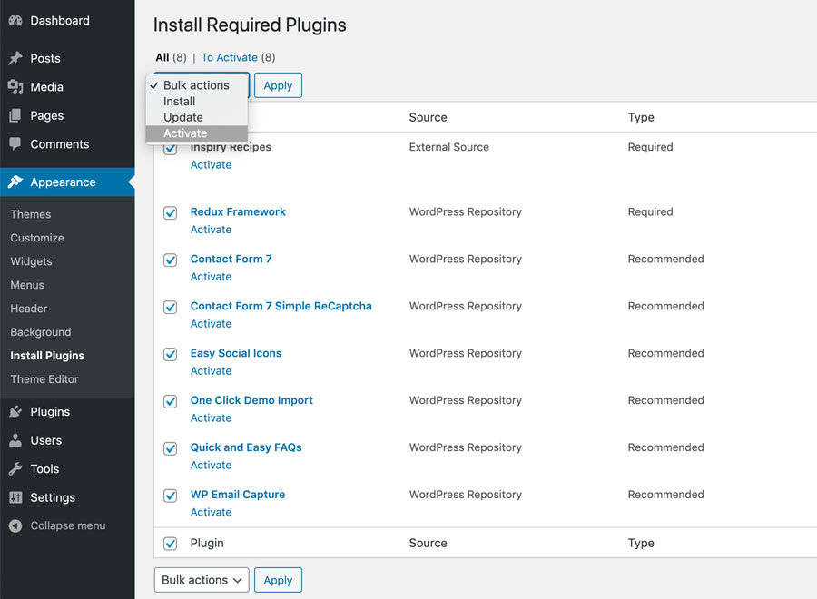

Install RecipePress Theme
In start, You must have a working version of WordPress already installed. For information in regard to installing the WordPress CMS, please see the WordPress Codex Installing WordPress
Once you have a working version of WordPress, you need to download All files and documentation from themeforest and extract the downloaded zip to get various files including inspiry-recipepress-theme.zip.
Install Theme Via WordPress Dashboard
1 - Go to 'Appearance > Themes' section
2 - Click 'Add New' and select the 'Upload Theme' option


3 - Choose the inspiry-recipe-press.zip file and press 'Install Now'

4 - Once the theme is uploaded you need to go back to themes page without activating it as it is recommended to use the child theme and now we will upload it.

5 - Follow step 2 again and Choose the inspiry-recipe-press-child.zip file and press 'Install Now'

6 - Once the child theme is uploaded you can activate it.

7 - Activating the theme will take you to the themes page.
if you face any problem during upload through dashboard, please upload the theme using FTP as guided below.
Install Theme Via FTP
- Access your hosting server using an FTP client like FileZilla
- Go to the 'wp-content/themes' folder of your WordPress installation
- Extract the inspiry-recipepress-theme.zip file and put the inspiry-recipepress-theme folder in 'wp-content/themes/' folder
- After that extract the inspiry-recipepress-child.zip file and put the inspiry-recipepress-child folder in 'wp-content/themes/' folder
- Go to 'WordPress Dashboard > Appearance > Themes' section to activate the Mixer child theme
- Activating the theme will take you to the themes page.
Install Required Plugins
1 - After you have installed and activated the RecipePress child theme. Go to Appearance > Themes there'll be a message of required & recommended plugins at the top of the WordPress dashboard.

2 - Click on Begin Installing Plugins and it will take you to Appearance > Install Plugins.
Note: You must have installed required Plugins. Recommended plugins are optional.

3 - After installation, you will view a screen like below, Return to required plugins installer.

4 - Now Activate all the plugins as demonstrated in the screenshot given below.

5 - Once all these plugins are activated. The next step is to Import Demo Contents.